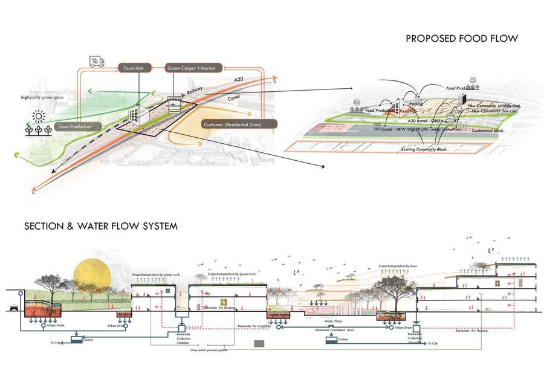
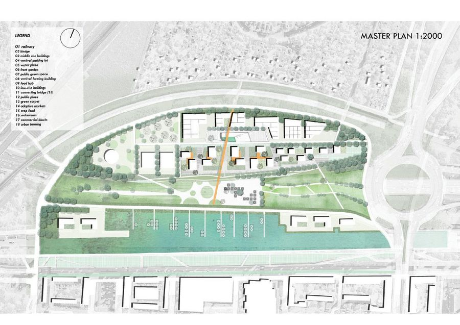
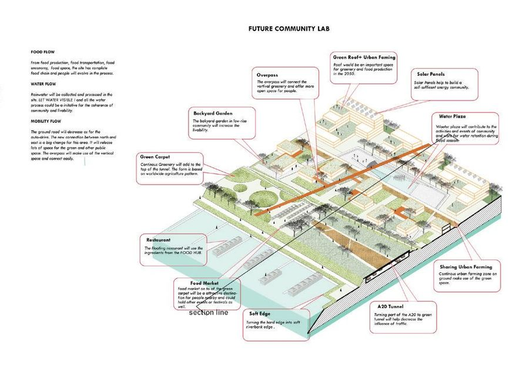
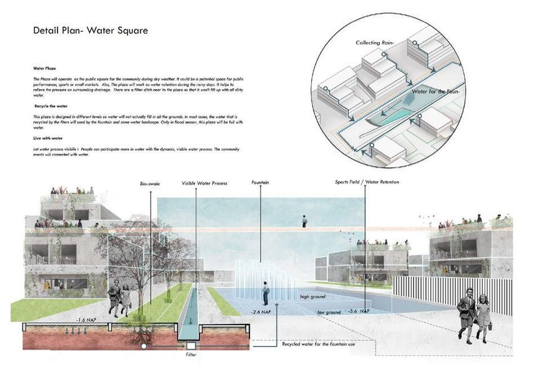
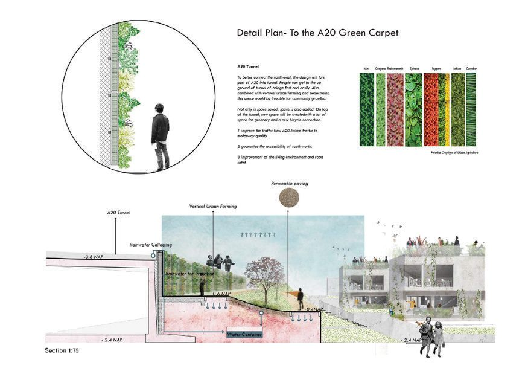

Circular Community
- Place
- Rotterdam, NL
- Year
- 2018
- Type
- Academic work
- Supervisor
- Nico Tillie

A neighbourhood in Rotterdam organised around food, where growing, eating and composting are treated as one continuous flow rather than three separate systems. A water square and a green carpet along the A20 carry the public side of it.
正文是我根据图纸标题写的草稿
The project proposes a circular community around food — production, consumption and waste treated as one continuous flow rather than three separate systems.

A water square and a green carpet along the A20 carry the public side of that system, while the detailed plans work out how the flows move through the blocks: growing, harvesting, composting and returning to the soil within walking distance.




 Next projectKameleon speelplaatsPijlsweerd, Utrecht, 2024–2025
Next projectKameleon speelplaatsPijlsweerd, Utrecht, 2024–2025